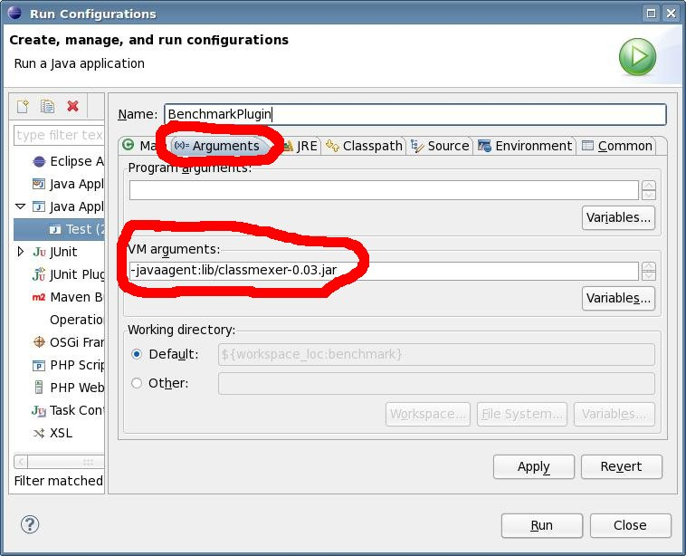
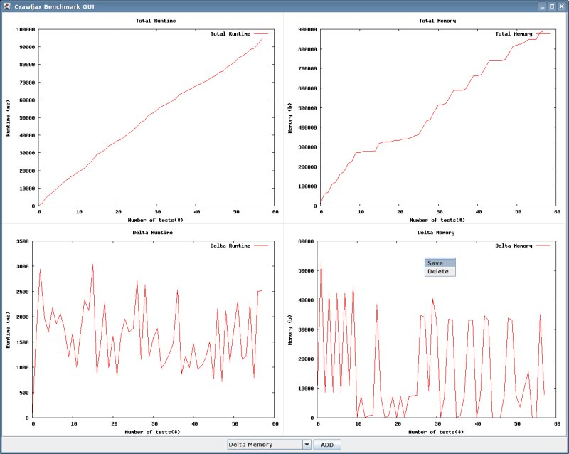

Benchmark
The benchmark plugin is used to create performance measurement graphs of crawl sessions.
Features
Save Output in one of the formats:
- Adobe Illustrator 3.0 Format
- BBN Bitgraph Terminal
- Computer Graphics Metafile
- Enhanced Metafile format
- EPS format for CorelDRAW
- LaTeX picture environment
- LaTeX texdraw environment
- REGIS graphics language
- Selana
- ascii art for anything that prints text
- dxf-file for AutoCad
- EEPIC — extended LaTeX picture environment
- FIG graphics language for XFIG graphics editor
- GIF images using libgd and TrueType fonts
- GPIC — Produce graphs in groff using the gpic preprocessor
- JPEG images using libgd and TrueType fonts
- LaTeX picture environment using graphicx package
- LaTeX picture environment with emTeX specials
- LaTeX picture environment with PostScript \\specials
- LaTeX picture environment with PSTricks macros
- plain TeX with PostScript \\specials
- PNG images using libgd and TrueType fonts
- Portable bitmap [small medium large] [monochrome gray color]
- Tk/Tcl canvas widget [perltk] [interactive]
- W3C Scalable Vector Graphics driverv
Plot types:
- Runtime
- Memory Usage
- Number of States
- Number of Edges
- Revisited States
- Revisited Edges
- Crawl Depth
Requirements
- GnuPlot, tested with version 4.2 patchlevel 2. Get GnuPlot from gnuplot.info
Usage
When memory usage graphs needs to be made the line: “-javaagent:lib/classmexer-0.03.jar” (without quotes) must be added as JVM Argument. The shot below is the Run Configuration of Eclipse:

{kind=link}
Benchmark Eclipse Runtime Configuration
Create a runner class as normal, than add the plugin in the CrawljaxConfiguration.
Example:
|
The BenchmarkCollectorPlugin “collects” the data to graph and the BenchmarkGUIPlugin displays and updates the GUI. The benchmark can be ran without the BenchmarkGUIPlugin the results will be in the files as specified in the configuration:
Available configuration options:
|
Screenshots

{kind=link}
Benchmark Plugin screenshot